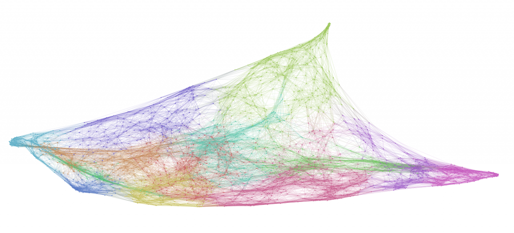
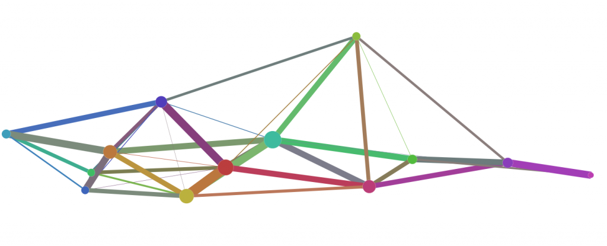
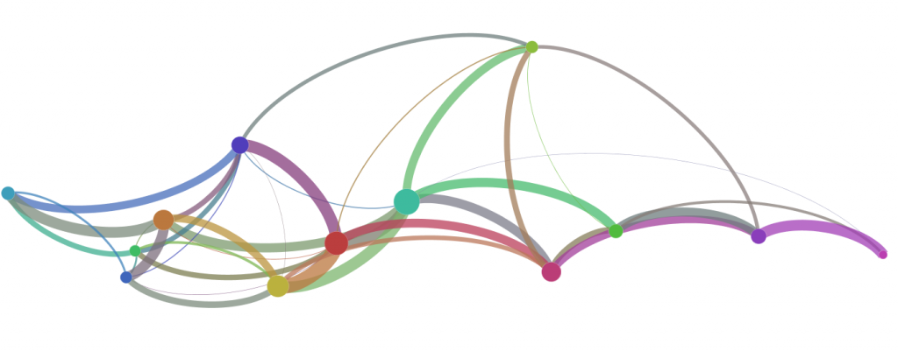

One of the projects I’m supporting this year is an analysis of neighborhood similarity of cities in the United States. The similarity measure is based off a set of attributes and can be represented as a matrix, which can then be represented as a graph or network. Once in network form, it can easily be visualized and network community detection can take place, allowing for compression of a network into more a more manageable form if the community detection reveals a strong signal. Visually, that means a 3000×3000 matrix can be made to look like this:


This creates an illusion of similarity that is difficult to adequately explain to an audience. Fortunately, when we have the chance to compress large quantities of data, we can provide some better explanation of the structures at work in the creation of a network visualization of this kind. In this case, our strong community signal allows us to compress ~3000 nodes into just 13. By providing the combined strength of connection between those nodes, which represents the connection across communities that makes up the above-referenced 21.5% of the connections in this network, and sizing the nodes based on their share of those connections, we get a better understanding of how much of the structure of the more complex network is illusory.




That structure would provide a researcher with a useful scholarly path to explore, if it weren’t for the fact that this network is invalid. It turns out the method for determining the similarity between the neighborhoods needs to be retooled. The final network may look just like this, or it may not look anything like this. With that in mind, I find it particularly interesting that it makes no difference in the usefulness of this network from a methodological perspective.
Exploratory analysis is typically construed to mean exploration of the material for its content as it applies to a research agenda, but much of what is done under the auspices of the digital humanities is exploration of the methods (either theoretically or enshrined in tools) for their suitability to a research area. It seems healthier to think one can sample and experiment with a variety of methods, and find methodological successes even when forced to retreat from claims that advance a particular research question. Or it could be that my position in supporting research allows me to value the methodological component higher than the traditional research agendas.
Either way, the use of inset maps that show a compressed version of a network, when there are valid methods available of compressing such networks, is a useful method in network cartography.